Sleepless after midnight, a man takes a silent emergency call at his own mirror and falls through his dilated eye back to the winter night he was six, when a ghost child told him his parents' marriage would not last and the car's flashing lights proved it.
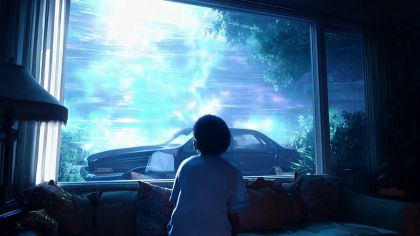
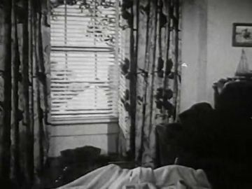
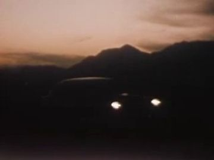
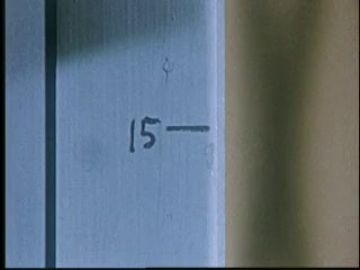

The poem
The poem is built from three 'types' of soundless signal: 'a type of silent scream a trap lover makes to escape a pending marriage', 'a type of silent call a man makes to the mirror after midnight', 'a type of warm and heavy breeze in winter where a child is left home alone'. Each defines a noise that cannot be heard. The adult half is insomnia: falling 'with my headlights off', walls 'caving inward', tossing and turning, 'a road winding down', and the flat verdict 'we won't make it'.
The turn is 'I was six I recall when the ghost of a dead and loveless seven-year-old child appeared' (L09-L10). The present-tense dread becomes a memory with a date, and the marriage that ends is his parents', not his own. A refrain holds the two halves together: 'dilated at the sun as long and as wise as possible' becomes 'curtains pulled and blinds up as far and as wise as possible to see flashing lights'. Opening the eye and raising the blinds are the same act. The 'road winding down' returns with 'two souls' on it, and the poem ends emptied: 'no tears... no love to give'.
Look
Two lighting worlds. The adult present is teal and black, lit by a phone screen and street spill. The childhood is lit only from outside: hard headlight beams and amber hazards swept across the room by code-drawn light cards that rake across the cardboard, so the flutes catch and throw tiny shadows. Venetian slats are real cut strips of white card on thread and throw striped shadows on the boy's face. The ghost child is a thin grey-blue wash with the kraft showing through, never a digital transparency.
Our best elements
The strongest things we already have for this poem: generated footage, Atlantis views, found film and painted kit sheets.
living_room_1990s master plate; the passage window
Big bright window, car in the driveway and an older living room. The child is seen from behind with dark curly hair, close to our young POET. Crop him out or replace him with the puppet.
02.5a 'curtains pulled and blinds up'; texture ref for the window
Venetian blinds with patterned drapes and a bed, exactly the line's furniture, in 1950s grain.
driveway_road_night far layer; the 'road winding down'
Two headlights low under a dark ridge. It reads instantly and is bright enough to open in a pane.
height_marks insert; the ghost is one notch taller
A pencil mark on a white jamb, the exact prop, already filmed.
02.3b pupil dilates
Detailed iris with a reflection we can replace with the road.

02.3b to 02.3c pass-through
Pure graphic dilation on black. It cuts from 01's exit and into the flashback.

02.1 black_void: the lights before 'headlights off'
A pair of lamps in grey nothing: falling toward light that then goes dark.
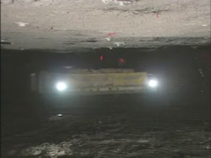
flashing_lights sweeping the void; walls closing
Lamps coming at us inside rock walls, which pairs with 'walls caving inward'.

tambourine prop reference; flight insert
Clean read of rim, skin and paired jingles. Paint the card straight from it.

timing and shard-pattern reference for 02.6c
The shatter geometry is right. The generated boy is not our young POET, so use it for motion only.
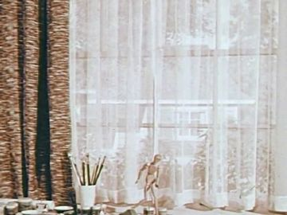
02.2 emergency call; alt living-room window surface
A bright, large, vertical window in a telephone film, linking the 'call' to the window.
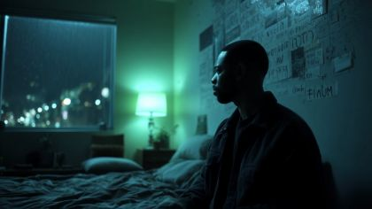
bedroom_night look and light reference
Teal street spill, bed and window match the poem's after-midnight. Same room language as 01.

L14 'two souls on a road winding down'
The road winding down in the district: glowing curve, small figures at the far end.
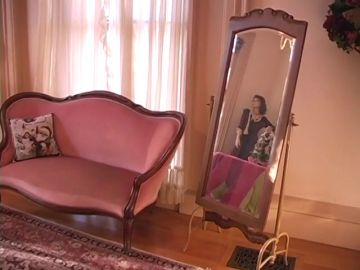
mirror prop reference
Full-length standing mirror with a dark frame, the exact prop.
What we need
- Figure-free 1990s living-room plate: big front window, curtains, blinds, door post, driveway beyond. gen_05eff5a9d2 and gen_3ccce4c34e have children in them.
- Our generated children (gen_3ccce4c34e, gen_717a8b5728, gen_0d7fcc986c, gen_5d34541ef7) read as white kids. The young POET and ghost child are Black, so these are motion references only.
- YOUNG_POET and GHOST_CHILD packs have only adult bearded style references in panel C. They need a child face and head reference sheet before painting, or we will get a small bearded man.
- Bedroom_night with a full-length mirror: no generated bedroom has one. Paint the mirror card and composite.
- Archive of a family car arguing at night, seen from a house: nothing found. Search 1970s-90s home video and driver-safety films.
- The ghost child's hug pose and dissolve, the parents' turned-away pose, and the adult POET walk-to-mirror and palm-on-mirror poses are not on any action sheet.
- Breakaway glass shard cards and the 1990s sedan side card (headlights cut out for backlight).
Characters
POET kit →
the adult speaker: falls with his headlights off, takes the silent call at the mirror, looks into his own eye
Costume. black crew-neck tee, dark trousers, barefoot in the bedroom scenes (paint bare feet for 02.2). No glasses.
Expressions. afraid (float), pain: silent scream, head back, mouth open, tired (in bed), recognition (at the mirror), strain (eyes in the dark)
Hands. open (float), claw (scream), fist (tossing), flat_push on mirror, hidden
Cards to paint. float threequarter body; float front body; lie profile under sheet; walk threequarter_back; head: scream (head back); head: recognition; hand: flat_push(mirror) palm card
poet.02.action covers float threequarter, float front and lie profile, but all are empty. It omits the walk to the mirror and the palm-on-mirror stand the treatment specifies. Panel B again shows the track jacket and sunglasses; paint the tee.
Its action sheet for this poem is on Character Kits v2.
open the action sheet →| action | beats | how the card does it |
|---|---|---|
| palm to the mirror (L06) | walks in head low → stops, lifts eyes → palm meets the glass, reflection's palm meets it → holds; reflection becomes the boy's window | profile body; forearm on elbow brad; flat_push card on the glass plane, mirrored card behind acetate; head swap tired → recognition |
| silent scream (L02-L03) | drift → body tightens, hands come up as claws → head back, mouth open, no sound → walls stop | float-front body; scream replacement head (head back); claw hands; four wall flats hinge in on brads |
| tossing in bed (L05) | lies still → rolls to profile → fist on pillow → phone lights | lie-profile replacement under a sheet card that lifts on one brad |
EX kit →
the man in distress, floating, unreachable in the black
Costume. olive bomber, dark jeans, white low sneakers; back only
Expressions. unseen
Hands. claw, open
Cards to paint. float back body, arms out; hand claw (back view)
ex.02.action has the right single pose (float·back) and claw, empty. The back-of-head card is good.
Its action sheet for this poem is on Character Kits v2.
open the action sheet →| action | beats | how the card does it |
|---|---|---|
| writhes, unreachable | arms thrown out → slow twist away → holds far and small | back body with both arms on shoulder brads swinging out; whole card slowly scales down as POET drifts toward him |
YOUNG POET kit →
the poet at six, alone at the living-room window on a winter night
Costume. long-sleeved flannel pyjamas in faded blue check, thick socks; small Black boy, big watchful eyes, larger head, short limbs
Expressions. listening, surprised (the hug), sad, strain (hauling the cord), calm (the throw), down
Hands. relaxed, open / flat palm on glass, grip(curtain), grip(blind_cord), grip(tambourine), hidden
Cards to paint. back stand; profile stand (hug); front close head (slat shadows); heads: listening, surprised, sad, strain, calm, down; hand: flat palm (small); child face reference sheet
young_poet.02.action has reach·back, reach·threequarter and turn·threequarter_back, all empty. It lacks the stand-at-window pose that carries the passage and the hug. Panel B has no image of the boy at all, and the panel C style refs are adult bearded heads.
Its action sheet for this poem is on Character Kits v2.
open the action sheet →| action | beats | how the card does it |
|---|---|---|
| palm on the window (L10 passage) | nose near glass → small hand rises → palm flat, fingers spread → stays as the headlights sweep | back or profile body; forearm on elbow brad; open-palm card pressed to the acetate glass; head swap listening → down |
| hauls the blind up (L13) | both hands on cord → pulls down in three tugs → slats rise from the bottom → hold, looking out | reach-back body; cord is real thread; slat cards lift on the same thread |
| throws the tambourine (L15) | takes it with both hands → turns, cocks arm over shoulder → throw → arm stays extended | threequarter_back turn body; R arm swings on shoulder brad; tambourine card hands off to a code path through the glass |
GHOST CHILD kit →
a dead seven-year-old who hugs him, tells him the marriage won't last, then hands him the tambourine (they/them)
Costume. long pale nightshirt, bare feet; small Black child painted in thin grey-blue wash with the corrugation showing; one notch taller than the boy
Expressions. sad, calm, whispering (mouth near his ear)
Hands. cup (hug), relaxed, grip(tambourine) by the rim
Cards to paint. profile stand (hug); reach profile; front stand (dissolve); three-step translucency cards; heads: sad, calm, whisper
ghost_child.02.action has only reach·profile. The hug, the core image of the scene, is missing. The treatment calls the ghost 'she', but the poem gives no gender; use they.
Its action sheet for this poem is on Character Kits v2.
open the action sheet →| action | beats | how the card does it |
|---|---|---|
| the hug and the whisper (L09-L10) | fades in beside him → arms wrap from the side → head tilts to his ear → holds, no breathing → fades | profile body with both arms on shoulder brads closing around the boy's card; cup hands tucked behind his near arm; opacity ramps in paint layers (three cards of thinning wash) |
| holds out the tambourine | rim offered at arm's length → boy takes it → ghost thins to specks | reach-profile body; grip(tambourine) hand; dissolve by swapping to a card with pinpricks punched through |
PARENTS kit →
two silhouettes arguing in the idling car, then rolling away down the road
Costume. 1990s winter coats (puffy, high collars), seen in profile and lit by the dash; faces mostly shadow
Expressions. strain, pain, turned away
Hands. open (slicing the air), grip(steering_wheel), fist, relaxed
Cards to paint. driver sit profile; passenger sit profile turned away; heads x2 profile + turned-away
parents.02.action gives ONE sit·profile for both. PARENT_2 needs a separate turned-away pose.
Its action sheet for this poem is on Character Kits v2.
open the action sheet →| action | beats | how the card does it |
|---|---|---|
| argue in the car | driver turns, hand slices → passenger turns away to the side window, fist → both still as the dome light dies | two seated half-bodies (waist up) inside a car-window occluder; forearms on elbow brads; heads swap profile to turned-away |
Props
Sorted by priority. Each has its design, how to build it, the references found in the archive and our footage, and a prompt for its card sheet.
white venetian blind with pull cord, heavy floral curtain
150 cm; white card slats on thread; rust floral curtain in two panels; states: blind down, half, up; curtain closed, pulled aside
Generation prompt
Prop card sheet: white venetian blind and a heavy rust-and-cream floral curtain, flat corrugated-cardboard card, gouache + confident ink line, raw kraft cut edge, brass brads where it hinges, flat-on even light, plain background. Cards: (1) blind fully down, (2) blind half raised, (3) blind fully up with cord, (4) curtain panel closed, (5) curtain panel gathered aside.
1990s family sedan in the driveway
side and rear-three-quarter silhouettes, 480 cm at scale; headlights and hazards cut out for backlight; side window cut for the parents; states: lights off, headlights on, hazards on, dome light on
References found
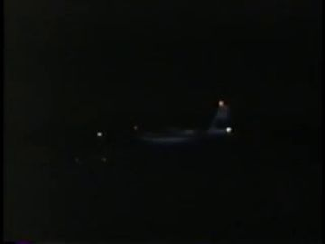
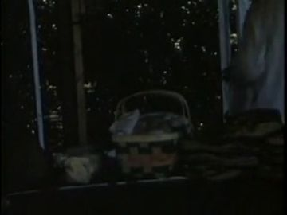
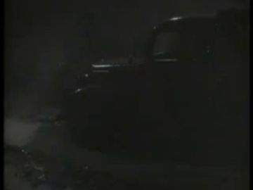


Generation prompt
Prop card sheet: 1990s four-door family sedan, flat corrugated-cardboard card, gouache + confident ink line, raw kraft cut edge, brass brads where it hinges, flat-on even light, plain background. Cards: (1) side view with window openings cut out, (2) rear three-quarter with tail and hazard lamps cut out, (3) front with headlamps cut out.
full-length standing mirror, dark frame
160 cm; dark wood frame card, acetate face; states: reflection exact, dark, opening (archive inside)
References found

Generation prompt
Prop card sheet: full-length standing mirror on a stand with a dark wood frame, flat corrugated-cardboard card, gouache + confident ink line, raw kraft cut edge, brass brads where it hinges, flat-on even light, plain background. Cards: (1) front view with the glass area cut open, (2) three-quarter view, (3) stand legs separately.
wooden-rimmed tambourine with skin head and paired brass jingles; travels into 03
25 cm; kraft rim, cream skin, brass-foil jingles on brads so they can shiver; states: whole, shivering, in flight (edge-on ellipse)
References found


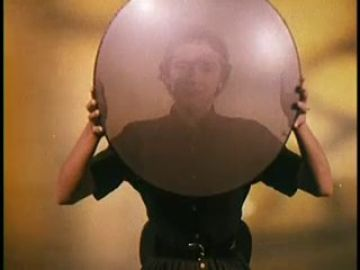
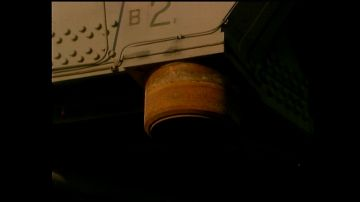

Generation prompt
Prop card sheet: wooden-rimmed tambourine with skin head and paired brass jingles, flat corrugated-cardboard card, gouache + confident ink line, raw kraft cut edge, brass brads where it hinges, flat-on even light, plain background. Cards: (1) face-on whole, (2) three-quarter ellipse, (3) edge-on in flight, (4) separate jingle pairs on brads.
living-room front window pane
120 cm; acetate pane in a white-painted frame card; states: whole, star-cracked, shattering shards (8-12 loose cards)
References found
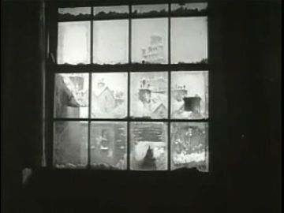
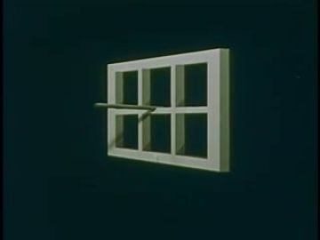
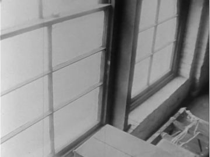
Generation prompt
Prop card sheet: 1990s living-room window pane and frame, flat corrugated-cardboard card, gouache + confident ink line, raw kraft cut edge, brass brads where it hinges, flat-on even light, plain background. Cards: (1) frame with clear pane, (2) pane with a star crack, (3) ten loose glass shard shapes with ink highlight edges.
white door post with pencil notches at six and seven
130 cm post; pencil ticks with '6' and '7' written in a parent's hand
References found

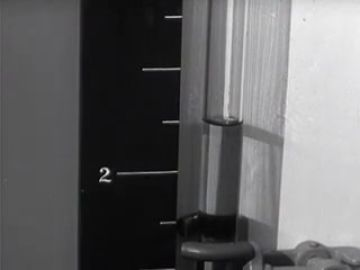
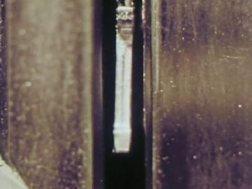


Generation prompt
Prop card sheet: white painted door post with pencil height notches labelled 5, 6 and 7, flat corrugated-cardboard card, gouache + confident ink line, raw kraft cut edge, brass brads where it hinges, flat-on even light, plain background. Cards: (1) door post with notches, (2) door post plain.
smartphone on the nightstand
15 cm; black card with cut screen; states: dark, lit buzzing (two offset cards for the buzz)
References found
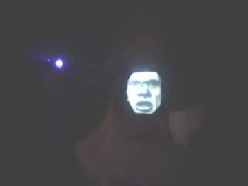
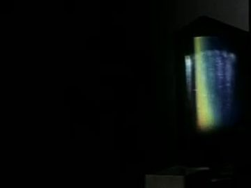
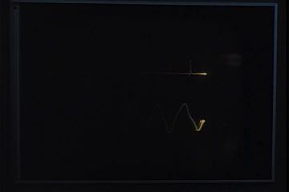
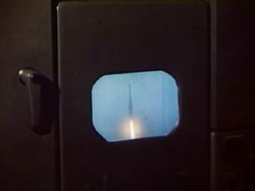
Generation prompt
Prop card sheet: smartphone lying face-up on a small nightstand, flat corrugated-cardboard card, gouache + confident ink line, raw kraft cut edge, brass brads where it hinges, flat-on even light, plain background. Cards: (1) phone with screen cut open, (2) phone dark, (3) nightstand.
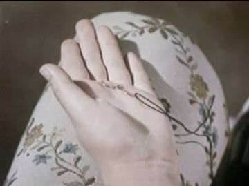
one pair of gold rings: engagement rings in the void, wedding bands on the sill
2 cm each (overscale 6 cm for inserts); gold-foil card; states: together, drifting apart
Generation prompt
Prop card sheet: two plain gold rings, flat corrugated-cardboard card, gouache + confident ink line, raw kraft cut edge, brass brads where it hinges, flat-on even light, plain background. Cards: (1) ring face-on, (2) ring three-quarter, (3) two rings touching.
Places
No plate yet.
black_void
no floor, no horizon; headlight pairs and amber sweeps cross it; four wall flats can hinge in
Where the archive opens: the inside faces of the caving walls; a floating headlight beam
References: our footage, Atlantis views, found film


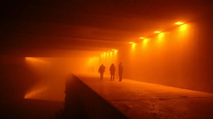

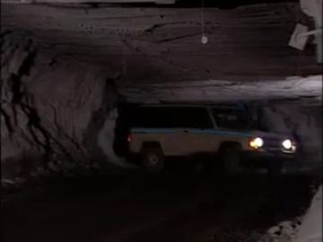
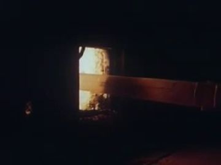

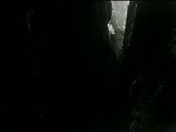

bedroom_night
the same high-rise bedroom as 01, after midnight: unmade bed, phone on the nightstand, a full-length mirror
Where the archive opens: the mirror (best: large, vertical, his own); the window
References: our footage, Atlantis views, found film

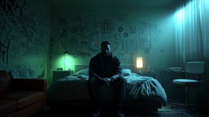

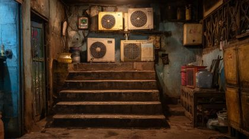

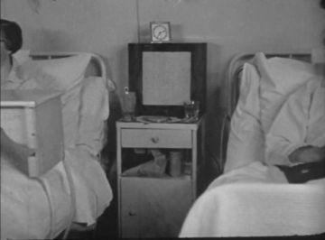
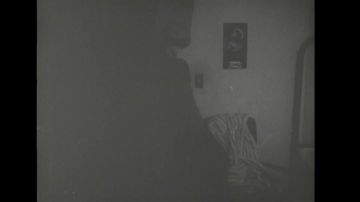
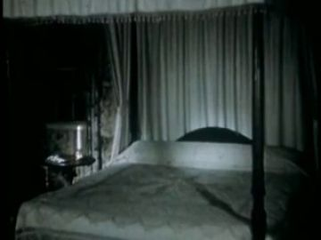
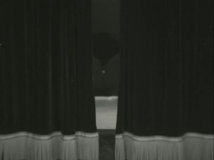
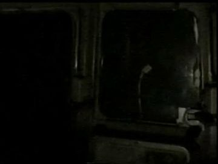
Generation prompt
The same dim high-rise bedroom at night, no people. Unmade bed, phone glowing on a nightstand, a full-length standing mirror with a dark frame against the far wall, teal street light through the window. 35mm, still.
eye_macro
his eye in the dark; a night road winds down inside the pupil
Where the archive opens: the pupil
References: our footage, Atlantis views, found film
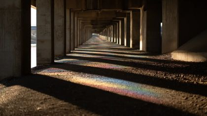

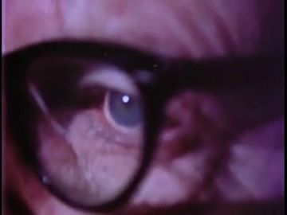
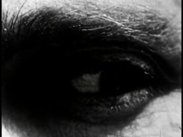

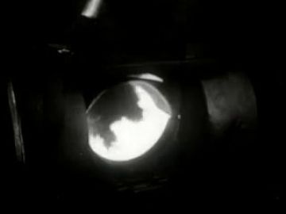
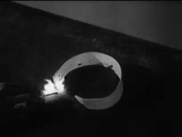
living_room_1990s
a winter living room at night lit only from outside: big front window, curtains, venetian blind, door post with height marks, an old sofa
Where the archive opens: the front window between raised blind and sill (big, bright: passage); the door post; the TV-dark corner (weak)
References: our footage, Atlantis views, found film


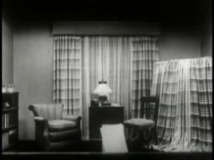

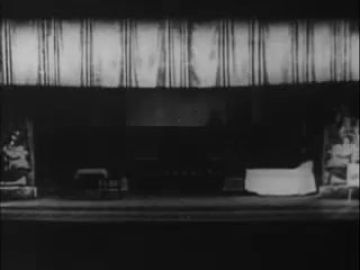
Generation prompt
Empty 1990s living room at night in winter, no people. A big front picture window with a white venetian blind half up and heavy rust floral curtains. Old patterned sofa, a white door post with pencil height marks. A family sedan in the driveway outside, headlight beams raking the walls. 35mm, still.
driveway_road_night
the driveway at the top of a road winding downhill; the car idles, then rolls away with hazards blinking
Where the archive opens: the car's side window (parents); the windshield (the road ahead)
References: our footage, Atlantis views, found film


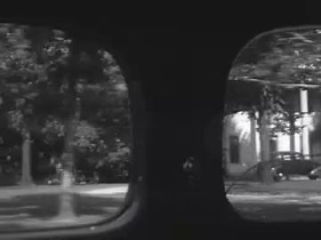

Generation prompt
Suburban driveway at night at the top of a road winding downhill, no people. One 1990s sedan idling with headlights on and amber hazards, bare winter trees, cold mist. Seen from inside a house window. 35mm, still.
Effects
| effect | how, in this cut-out world |
|---|---|
| flashing_lights | code-drawn white and amber light cards raked across the board at the bump rhythm of the road; archive headlight pairs keyed in as the sources. |
| headlight_sweep | a soft-edged white wedge travels across walls, door post and the boy's face; slat_shadows ride inside it. |
| walls_caving | four cardboard wall flats on brads hinge inward around POET in steps; screen shake 2-3 px. |
| pupil_dilate | gen_24ac458d01 iris with a code iris-mask opening. Match-cut to the blind slats rising: same upward wipe. |
| road_in_pupil | Winding Road Through The Woods (2007) or Show 'Em the Road (1954) masked into the pupil, then the camera pushes through. |
| mirror_reflection | mirrored POET card behind acetate. On the hold it is replaced by the boy's back at his window: the reflection is the memory. |
| ghost_translucency | three painted ghost cards of thinning wash swapped in and out; never a digital alpha. |
| ghost_fade_out | swap to a card with pinholes punched through, backlit, then remove. |
| breath_on_glass | a white tissue disc on the acetate that grows and fades on the boy's exhale. |
| slat_shadows | real white-card slats in front of the key light; stripes fall on the boy's face card. |
| glass_shatter | pane swaps whole → star crack; then 10 shard cards fly outward on code paths; room flats peel away to black. |
| hazard_blink | amber cut-outs in the car card backlit on a 1.5 Hz blink. |
The puppet passage
his line · 02_L10
“and shared that my parents marriage wouldn't last.”
the archive answers · Straight Talk (1992)
“That's what my parents told me.”
palm on a surface · window: the living-room window, curtains pulled and blinds up, onto the street where the car stands with its lights flashing
Keep. Palm flat on the window glass, held through the line and the answer, is the strongest gesture type. Straight Talk (1992) 'That's what my parents told me' says the plain version of what a ghost told him.
Better. The palm should be the YOUNG POET's small palm, not the adult's: the line is memory ('I was six'). Use a figure-free version of gen_05eff5a9d2 (big bright window, car outside) and open the archive in the pane between the raised blind and the sill, large. Let one headlight sweep cross the palm on 'wouldn't last'. Swap the head from listening to down. Keep the ghost's last card fading at frame edge.
Other lines that could carry one:
- L06 'a silent call a man makes to the mirror after midnight': adult palm flat on the mirror; THE PHOTOGRAPHER (1948) opens inside the mirror glass.
- L13 'With curtains pulled and blinds up as far and as wise as possible to see flashing lights': grip on the blind cord, held high; Show 'Em the Road (1954) headlights open in the window as the slats clear.
- L12 'where a child is left home alone': head lowers, back to the door post; They Grow Up So Fast (1956) height mark opens on the jamb.
- L15 'no love to give': tambourine held out, then thrown; Reasons Why (Part II) (1959) disc held overhead opens in the breaking pane.
Scene ideas
- The blinds are the iris: the slats rising in 02.5a (thread and card) match-cut to gen_24ac458d01 dilating. Both carry the refrain 'as far and as wise as possible'.
- Headlights off: two lamps from gen_efa9055be2 rush toward POET in the void and cut to black on 'headlights off'. Dawn of a New Day (1998) tunnel lamps sweep past as the walls hinge in.
- The mirror answers: the adult's palm meets his reflection (02.2c), then the reflection becomes the boy's back at the window from gen_05eff5a9d2. The mirror is the door to the memory.
- One pair of rings: the rings that float apart in the void (02.1c) land on the 1990s sill (02.4a) and slide apart as the car pulls away. One prop across two times.
- Height marks: They Grow Up So Fast (1956) jamb in the door post; the ghost child stands exactly at the '7' notch, one above the boy's '6'.
- The car as a lantern: the sedan card is backlit through cut windows. The parents argue in silhouette while Show 'Em the Road (1954) plays through the windshield as the road they will go down.
- Road winding down in Atlantis: on L14 the window becomes view_085's orange walkway with its two far figures, the 'two souls'.
- The throw: the cardboard tambourine passes through the glass on a code path, the shards fly, the room flats peel to black, and the tambourine keeps flying into 03 (gen_872d16167d).
References to look for
| what | where to look |
|---|---|
| Carrie Mae Weems, Kitchen Table Series | a Black domestic interior held by one light source; stillness under emotion |
| Gregory Crewdson suburban night photographs | light from cars and windows raking a house at night |
| The Spirit of the Beehive (1973) / Moonlight (2016) | a child at the window; a Black boy's face in coloured night light |
| Lotte Reiniger and Michel Ocelot | child silhouettes; translucent paper for ghosts |
| archive: night driving and driver-safety films | 'night driving 1950s', 'headlight glare film', 'driver education night', 'hazard lights' |
| archive: home video 1990s | 'family home video 1993 Christmas', 'driveway car night home movie', 'child at window home movie' |
| archive: eye and vision films | 'pupil dilation film', 'how the eye works 1950s' (Gateways to the Mind 1958 already found) |
Our footage for this poem
The 20 generated clips and 8 Atlantis views closest to the poem (CLIP, image against its treatment and lines).
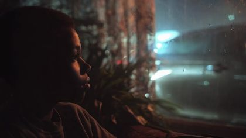

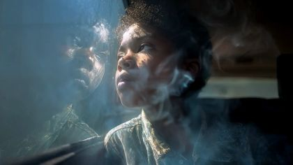


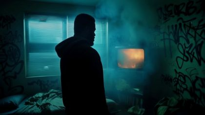


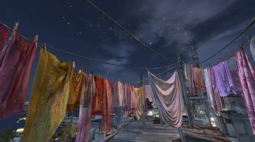
The kit
| status | kind | item | source |
|---|---|---|---|
| need | fx | headlight sweep / slat shadow light cards | code-drawn |
| need | head | POET scream head, recognition head | add to poet.black_tshirt.heads |
| need | head | YOUNG_POET child heads + face reference | to generate; child face ref from gen_c90bd5fde4 mood |
| need | prop | window + breakaway shards | to generate |
| need | prop | venetian blind + floral curtain | to generate |
| need | prop | 1990s sedan cards, lamps cut out | to generate |
| need | prop | standing mirror | to generate |
| need | prop | rings pair, door post with marks, phone | to generate |
| need | set | living-room plate, figure-free | to generate (ref assets/gen_05eff5a9d2.jpg) |
| need | sound | phone buzz, idling engine, tambourine jingle, glass break | to find |
| partial | body | POET float x2, lie profile, walk-to-mirror, palm-on-mirror | poet.black_tshirt packs + replacements; add walk/stand to sheet |
| partial | body | EX float back, arms out | ex.ex_jacket.body.back; paint |
| partial | body | YOUNG_POET pajamas body (back, profile, threequarter, threequarter_back) | young_poet.pajamas_winter packs; layouts only |
| partial | body | GHOST_CHILD body + 3 translucency steps + pinhole dissolve | ghost_child.ghost_nightclothes packs; add hug pose |
| partial | body | PARENTS x2 seated in car | parents.parent_coat packs; add turned-away pose |
| partial | hand | POET flat_push(mirror), claw, fist | poet.black_tshirt.hands |
| partial | hand | YOUNG_POET small hands: flat palm, grip(cord), grip(tambourine) | young_poet.pajamas_winter.hands |
| partial | prop | tambourine (4 cards) | assets/gen_a0ef973cb6.jpg ref; to generate card |
| partial | set | bedroom with mirror | assets/gen_a63bb494b1.jpg + mirror card |
| have | set | eye macro | assets/gen_24ac458d01.jpg, assets/gen_9f26db2b7a.jpg |
| have | set | road at night | assets/arch_49e405d4-738a.jpg |
| have | sound | Straight Talk (1992) 'That's what my parents told me' | archive clip b6396dff, 1.58-2.62 |